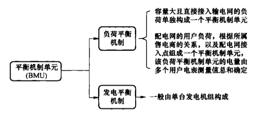
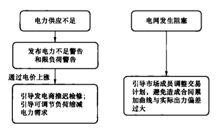
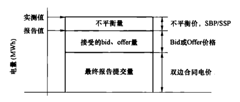

构。装机容量超过50MW的电厂必须持有发电许可证，通过电力库进行公开交易（直供除外）并形成竞争价格。供电公司、批发商、零售商及用户（除直供用户之外）也必须通过电力库来购买电力。
通过 POOL 的集中竞价，实现了合理价格下的供求平衡。POOL 模式的主要特点是：
（1）强制成员制。装机容量超过50MW的电厂、供电公司、批发商、零售商和用户必须通过电力库来买卖电力。
（2）全电量竞价模式。电力库主要开展日前交易，且要求所有市场成员只能通过电力库买卖电力，从而形成了全部电量都参与竞价的市场。
（3）复杂的竞价和系统边际价格。每台机组的竞价包括5个基本元素来代表机组的实际发电费用。系统的边际价格由为满足所预测的负荷水平而调用的发电机组中报价最高机组的报价决定。系统边际价格的制定方法复杂且透明度低。
（4）采用差价合约来避免价格波动的影响。由于差价合同的存在，POOL模式运行后期，发电厂商已没有积极性按规则竞价，市场中报价的随意性增加。
（5）价格制定缺乏有效竞争和负荷侧的参与。在电力库中，负荷侧是电力价格的接受者，而不能作为买方参与市场竞争，使定价过程中缺少负荷侧的参与，价格容易被发电厂商操纵。
9.2.2 NETA 模式
2001年，英国对英格兰和威尔士地区电力市场进行了彻底的改革，建立了新电力交易制度（NETA）。以双边合同为主的NETA模式取代了集中交易的POOL模式。双边交易可通过面对面的方式或在任意一个电力交易机构中进行交易。交易的数量、方式、时间、地点非常灵活方便。NETA模式还包括平衡市场和不平衡结算机制。在设计方面，NETA具有以下几个方面的特点：
（1）NETA 模式建立了发用电两侧共同参与的双边市场。
（2）NETA下市场参与者需准确申报电力供给和需求，从而有效地降低交易成本、分摊风险。
（3）NETA下报价方式简单明晰，提高了市场的透明度。
（4）以双边合同为主的 NETA 模式有效激励了发电厂商之间的合理竞争，并且引入和考虑了负荷侧对市场的影响。
（5）NETA 模式的市场监管难度低，可以针对市场变化做出快速响应。
（6）NETA 模式可以集中安排平衡和结算服务，以降低维护系统平衡的成本。
9.2.3 BETTA 模式
2005年4月开始，英国政府决定将NETA模式推广到苏格兰地区乃至全国，称BETTA计划。BETTA的主要特点是：
（1）建立全国范围内统一的竞争性电力市场，统一电力交易、平衡和结算系统。
（2）实现全国电力系统的统一运营，由英国国家电网有限公司（负责全国电力系统的
平衡，保障供电质量和系统安全。苏格兰原有两个电力公司保持输电资产所有权。
9.2.4 以低碳为核心的新一轮电力市场化改革
英国能源部制定了低碳减排路径，提出需要建立与低碳发展相适应的电力市场机制。2011年7月，英国能源部正式发布了《电力市场化改革白皮书（2011）》，开始酝酿以促进低碳电力发展为核心的新一轮电力市场化改革。英国新一轮改革以保障供电安全、实现能源脱碳化及电力用户负担成本最小为目标，改革主要内容包括：
（1）差价合约机制。由英国政府确定各类低碳电源的合同价格（strike price）并设立相应机构，与发电厂商签订差价合同，确保低碳能源在参与市场竞争中仍能以合同价格获得收入；同时与售电公司签订售电合同，按售电量收取低碳费以分摊对发电厂商补贴而产生的成本支出额。
（2）建立容量市场。在政府授权下，英国国家电网有限公司将对未来电力需求做出评估并组织容量拍卖，新建和已有电源、需求侧资源、储能设施均可参加，由英国国家电网有限公司代表售电公司收购容量，中标者需保证按时足额发电。
（3）设立碳排放性能标准。限制新建化石燃料电厂的二氧化碳排放标准为450g/kWh。新的碳排放标准意味着未来英国所有新建燃煤机组必须安装碳捕捉与封存装置（CCS）。
（4）建立碳底价保证机制（carbon price floor）。当欧盟碳排放交易市场中的成交价格低于政府规定的价格下限时，由政府补偿其差价部分。“碳底价保证机制”的正式实施时间为2013年，英国政府为碳交易设定15.7英镑/t的底价，2020年底价提高至30英镑/t，2030年将进一步增至70英镑/t。
2020年12月14日，英国政府正式发布能源白皮书——《推动零碳未来》，为应对新冠疫情后的绿色复苏以及2050年实现净零排放设定了详细的路线图。白皮书指出，未来英国将大幅提升电气化、清洁化水平，大力发展海上风电、低碳氢能发电、核电和零碳排放汽车等，加速推动电、气、热等多种能源形式的综合优化高效利用，并建立更加灵活的市场机制和高效的管理体系。对于英国电力市场建设，能源白皮书中特别提出要构建“高效电力市场（efficient electricity markets）”，主要目标是：①建设适应高比例可再生能源的电力市场；②建设充分利用清洁灵活性资源（如电动汽车、储能、抽水蓄能等）的电力市场，大幅增加清洁的灵活性资源利用，最大程度地减少电网投资成本，减少高峰期的供需压力，降低消费者的用电成本。
9.3 电力工业结构现状
根据 1989 年通过的《电力法》，英国对电力行业结构进行了拆分，原中央发电局拆分为 3 个发电公司和 1 个输电公司，3 个发电公司分别是国家电力公司、电能公司和核电公司，输电公司即英国国家电网有限公司。随后，3 个发电公司和 12 个地方电力局逐步实施私有化。经过数十年的不断并购、重组，改革初期经过拆分的电力行业结构重新出现了一体化并购趋势。目前英国由 6 家发售（或发配售、发输配售）一体化电力集团（称
为“六大电力集团”）在电力市场中占据主导地位。英国六大电力集团概况如表9-3所示。
表9-3
英国六大电力集团概况
| 六大电力集团 | 母公司名称 | 母公司国别 | 企业结构 | 售电市场份额\n(%) |
| 英国燃气（British Gas） | Centrica | 英国 | 发售一体 | 22 |
| 意昂公司（E.ON） | E.ON | 德国 | 发售一体 | 14 |
| EDF 能源公司（EDF Energy） | EDF | 法国 | 发售一体 | 12 |
| NPOWER 公司 | RWE 集团旗下的 Innogy SE 公司 | 德国 | 发配售一体 | 9 |
| 苏格兰电力公司 | Iberdrola | 西班牙 | 发输配售一体 | 11 |
| 苏格兰水电公司 | SSE Group | 英国 | 发输配售一体 | 15 |
截至2022年6月，英国电力工业各环节情况如下：
（1）发电环节。进入批发电力市场的发电机组数量增加。共核发189张发电许可证，分别归属于30多家独立发电公司、六大电力集团及以经营核电为主的英国能源公司（British Energy）。其中，六大电力集团发电量占英国总发电量70%以上。
（2）输电环节。在输电网层面，共有英国国家电网有限公司、苏格兰电力公司、苏格兰水电公司三家输电企业。其中，英国国家电网有限公司负责英格兰和威尔士地区电网业务，苏格兰电力公司负责苏格兰南部地区的输电业务，苏格兰水电公司运营苏格兰北部及群岛地区输电网。
（3）配电环节。改革之初形成的14家配电公司（包括英格兰和威尔士地区12个、苏格兰地区2个）逐步合并成6家配电集团公司（如表9-4所示），这些企业拥有并运行配电网资产，负责将电能从输电网配送到终端用户。
表9-4
英国主要的配电集团公司
| 配电集团公司 | 所辖的配电网公司 |
| 西北电力公司 | — |
| 北部电网公司 | 北部电网（东北）公司；\n北部电网（约克郡）公司 |
| 英国能源网公司 | 伦敦电网公司；\n东南电网公司；\n东部电网公司 |
| 西部配电网公司 | 西部配电网（东米德兰）公司；\n西部配电网（西米德兰）公司；\n西部配电网（西南）公司；\n西部配电网（南威尔士）公司； |
| SP 能源网公司 | SP 配电网公司；\nSP Manweb 公司 |
| 苏格兰和南部电网公司 | 苏格兰水电配电网公司；\n南部配电网公司 |
（4）售电环节。英国20余家售电公司，六大电力集团作为发电、售电一体化的电力集团，在售电环节处于主导地位，合计市场份额约83%。
9.4 电力市场架构及特点
9.4.1 市场总体架构
英国电力市场的电能交易以双边交易为主，实时平衡机制为辅。双边交易合同是电网调度的重要依据，多为实物合约，占比达到95%，平衡机制电量占比很小。因此，可以认为英国市场采用以市场成员分散决策、分散平衡为主的一种市场决策方式，突出的是电能的普通商品属性，提倡电能的自由买卖交易。在英国电力市场中，可按照市场的组织形式大致划分为三类电力交易：
（1）场外交易（OTC）。由交易双方通过自由谈判签订的交易，约90%的电量交易以场外交易的形式完成。市场中场外交易不仅仅局限于发电厂商和供电商之间，中间商（通常为银行等金融机构）也允许作为一方签订电力双边合同。电力中间商既不发电也不售电，只是通过交易获得利润。
（2）交易所内交易。电量交易主要是通过 APX 和 N2EX 两个电力市场进行交易，以短期电力交易为主，主要提供几个月到半小时前的电力交易。市场中约不到 10% 的电量通过交易所交易。
（3）平衡机制。由英国国家电网有限公司负责运行，目的是保证电力系统的实时平衡，用市场化手段解决合同电量和实际电量之间偏差电量，目前平衡机制交易的电量在2%～5%。
除上述交易类型外，英国电力市场中还包含面向低碳能源的差价合同交易和容量市场交易等类型。
9.4.2 交易品种和交易机制
9.4.2.1 场外交易
场外交易主要由交易主体之间自主谈判成交（即场外交易 OTC）或通过电力经纪公司撮合形成的。电力经纪公司为购售电双方提供交易信息，按照成交电量收取佣金。交易双方签订的双边合同中约定了交易电量、交易价格和电力曲线。双边合同签订时间可以持续到实时运行前1h。
场外交易的双边合同不需要由电网调度机构进行安全校核，但市场成员需以平衡机制单元（balancing mechanism unit，BMU）为主体，将同一BMU内的所有交易合同叠加成一条电力曲线，在规定的时间内上报给电网调度机构。如图9-1所示，BMU一般由一组发电机或负荷组成，分为负荷平衡机制单元与发电平衡机制。如果申报曲线与实际发用电存在偏差，市场成员需要承担平衡机制价格波动风险，因此会尽可能通过签订双边合
同使交易累加曲线与实际出力曲线一致。同时，符合条件的市场主体必须要参与电网调度机构组织的平衡机制。

图 9-1 平衡市场单元类别与组成
9.4.2.2 交易所内交易
英国电力交易所内的交易产品都是标准化交易产品，即规定了交易时段和最小交易电量。在交易所的交易平台上，交易者可以看到所有可交易的产品，自主选择交易品种，申报某个交易产品的购买或售出价格。市场主体提交集中竞价量价曲线时是匿名的，且所有申报均以电子方式呈报。以1h段和0.5h段为例，1h时段申报每个小时的量价曲线，申报单位为英镑/MWh，当日11:00关闭，覆盖当日23:00至次日23:00时段；0.5h时段申报次日每半个小时的量价曲线，申报最小单位为0.1MWh，当日15:30关闭，覆盖次日00:00至24:00时段，并规定价格上下限。
APX Power UK 组织的日前市场于 10:50 关闭，11:50 完成出清计算并公布交易结果；N2EX 日前市场则在 9:30 闭市，并于 10:00 前向市场公布出清结果。英国日前市场出清计算不考虑实际的网络情况，也不考虑机组的物理参数，出清价格为系统边际电价。日前集中交易在计划执行前一小时结束。市场主体签订的双边合同，结合日前进行的集中交易结果，形成最终物理合同（final physical notification，FPN）上报给电网调度机构。
此外，英国还有基于高峰（7:00～19:00）、低谷（23:00～7:00，19:00～23:00）时段划分的竞价市场，大部分竞价时间为7天滚动制。
由于双边交易和日前集中竞价市场均未考虑电网安全约束，电网调度机构在日前环节要通过大量分析计算，及时发现平衡和电网安全问题，引导市场成员调整交易。电网调度机构每日9:00公布全网及分区负荷预测；11:00开始根据市场成员提交的首次物理通知（initial physical notification，IPN），进行次日系统平衡裕度分析和电网安全分析；16:00电网调度机构根据最新的交易信息，发布系统平衡裕度和次日发电计划。
调度形式如图9-2所示，当发生电力供应不足时，及时发布电力不足警告和限负荷警告，通过电价上涨，引导发电厂商加大

图 9–2 调度平衡市场原理
出力，引导可调节负荷缩减电力需求。当发生电网阻塞时，引导市场成员调整交易计划，避免造成合同累加曲线与实际出力偏差过大。
9.4.2.3 平衡机制
由于英国双边交易占市场总体电量的规模较大，可能会导致系统调度效率较低，甚至影响系统安全运行。为解决这一问题，英国电力市场设立了平衡机制，平衡机制由英国国家电网有限公司的电网调度机构负责运行，用市场化手段解决合同电量和实际电量之间偏差电量。
具体组织方式上，平衡机制由电网调度机构在实际合同电量交割前1h负责组织，其目的是维持电力实时平衡和实施阻塞管理。在英国电力市场中，平衡机制是设计最复杂的电力交易，是保障系统平衡的“最后市场机制”。
（1）平衡机制报价。平衡机制的报价是要求竞卖价（offer）和竞买价（bid）必须成对报出，以便电网调度机构基于BMU提供的次日FPN和增减出力的报价信息（bid/offer）对机组出力或者负荷大小时进行调整。其中offer是指发电厂商增加出力或用电方减少负荷的报价；bid是指发电厂商减少出力或用电方增加负荷的报价。
（2）平衡机制发用电计划。日前集中交易关闸之后，电网调度机构根据BMU申报的增减出力报价、系统不平衡功率和阻塞情况，以购电费用最小为目标，选择购买增减出力报价（选择bid或offer），并调整相应市场成员的发用电计划。平衡机制中的增减出力报价按照价格优先排序，原则上，电网调度机构需据此购买上调或下调电力来进行每个时段的系统平衡。
（3）不平衡电量结算。系统每半小时会根据平衡市场参与者提出的offer和bid计算出两个与不平衡量有关的价格，系统买入价（system buying price，SBP）和系统卖出价（system selling price，SSP）。英国电力市场管理公司（Elexon）最后根据表计实测值是“超出合同”还是“低于合同”以及SBP和SSP进行结算，每个交易时段中导致系统不平衡的市场成员，将按相应时段的不平衡电量和系统结算价格收取偏差费用，从而引导市场主体尽量减少自身的不平衡电量。
9.4.2.4 针对低碳电源的差价合约和容量市场
1. 差价合约
英国为鼓励可再生能源发展，设立了基于差价合约的上网电价机制，由政府管理的专门机构与可再生能源发电企业签订长期差价合约。符合相关标准的可再生能源发电企业根据所签订的差价合约参与电力市场交易并获得电能量收入，即，若市场参考价（市场平均成交价）低于差价合约价格，则以差价合约价格计，其差价由政府补贴；若市场参考价高于差价合约价格，则将高于的部分返还。其中核电、部分生物质能发电等差价合约的市场参考价为季度或年度平均价，其周期较长；而光伏、风电等差价合约的市场参考价则为每日平均价，其周期较短。
自2014年以来，英国已累计开展了四轮可再生能源差价合约拍卖：
2014年10月，英国举行了首轮差价合约拍卖，交易于2015年3月结束，达成25笔
交易合同，共计2GW新增可再生能源装机容量，涉及新建海上风电、陆上风电和太阳能等项目。
2015年6月提出进一步完善差价合约交易机制的举措，主要包括：①允许非法人合资企业参与差价合同交易；②确保在市场出现负电价的情况下，发电机没有继续发电的意愿；③对于海上输电系统成本、燃料测量和采样、发电税收等方面技术细节进行细微调整；④给发电机提供更为灵活的计量系统维护和差异处理方式等。
2017年4月，英国举行了第二轮差价合约拍卖，共计11个项目，3.3GW容量达成交易，其中3.2GW容量为海上风电。
2019年4月，英国举行了第三轮差价合约拍卖，共计12个项目，5.8GW容量达成交易，其中5.5GW容量为海上风电。
2022年4月，英国正在开展第四轮差价合约拍卖，拍卖结果即将公布。
2. 容量市场
英国容量市场在电能量市场外单独设置，范围包括英格兰、威尔士和苏格兰，不包括北爱尔兰。容量市场由英国商业、能源和工业战略部（BEIS）负责政策制定和关键参数设定，英国国家电网有限公司（NG）为政府提供相关分析，并负责容量和差价合同（CFD）拍卖。政府指定的英国电力结算公司（electricity settlement company，ESC）作为容量市场结算机构。
（1）交易方式。容量市场包括二级市场，由政府指定机构或供电商作为购买方，交易方式为集中竞价或双边交易，可采用容量物理交易或金融性的容量期权交易机制。
（2）容量拍卖机制。由政府确定市场中所需的备用容量，并由政府指定机构负责招标，电源、需求侧资源和储能等均可参与竞标。
（3）容量拍卖产品。可开展4年拍卖（T-4）、1年拍卖（T-1）、需求侧资源拍卖等。
9.5 电力市场交易流程
英国电力市场的典型交易流程如下：
竞价日9:00，电网调度机构公布全网及分区负荷预测。
竞价日9:30，市场主体向电力交易机构N2EX提交运行日24时段售电报价和购电报价。
竞价日10:00，电力交易机构N2EX完成运行日24时段出清计算并公布交易结果。
竞价日10:50，市场主体向电力交易机构EPEX提交运行日24时段售电报价和购电报价。
竞价日11:00，电网调度机构开始根据市场成员提交的IPN，进行运行日系统平衡裕度分析和电网安全分析。
竞价日11:50，电力交易机构EPEX完成运行日24时段出清计算并公布交易结果。
竞价日16:00，电网调度机构根据最新的交易信息，发布系统平衡裕度和运行日发电计划。
运行日（T-1）h 前：
（1）市场主体可随时签订双边合同。
（2）电力交易机构可开展时块、基荷、峰荷、非峰荷等类型的滚动交易。
运行日（T-1）h:
（1）发电机组向系统运行机构申报 T 时段的 FPN 以及在 FPN 基础上进行上调和下调服务报价（Bid/Offer），零售商向系统运行机构申报用电需求预测。
（2）发电机组和零售商向负责不平衡结算的英国电力市场管理公司申报 T 时段最终合同位置（ECVN），市场主体和电力交易机构向英国电力市场管理公司申报双边合同信息。
（3）系统运行机构将平衡市场中调用的上调和下调服务电量报送给英国电力市场管理公司。
运行日 T 时段，英国电力市场管理公司计算不平衡电量，完成不平衡电费结算。
9.6 电力市场组织及职责分工
目前英国实行以双边交易为主、集中交易为辅的模式。电力市场组织主要依靠调度环节和电力交易机构。
9.6.1 调度环节
英国输电系统实施统一调度，调度职责由英国国家电网有限公司所属的输电公司（National Grid Electricity Transmission，NGET）承担，主要负责保持电力系统的实时供需平衡和可靠供应、确保系统安全稳定性、向市场主体发布信息等。自2019年4月起，英国电网调度机构（ESO）成为NGET的独立子公司，目前该电网调度机构下设4个部门：
（1）调度控制办公室（national control room）。该部门是电网调度机构的核心，通过秒级的气象预测和负荷预测以及调频措施，确保英国全境 $ 7 \times 24h $ 的电力电量平衡。
（2）电网规划团队（network team）。该团队负责从短期到未来20年的电网规划，并对资产、商业解决方案以及新发电机组建设工程进行评估。
（3）市场团队（market team）。该团队旨在为英国电力平衡服务建设和开发必要的市场和拍卖平台，还协助政府部门对现有的电力市场管理法规和电网收费制度进行必要的修订。
（4）战略与监管团队（strategy and regulation team）。该团队为 ESO 制定愿景和方向，同时负责出版物，并负责与英国天然气与电力市场局下设天然气与电力市场办公室（office of gas and electricity markets，OFGEM）进行交互，确保 ESO 能够履行各项许可承诺。
9.6.2 电力交易机构
目前英国实行以双边交易为主、集中交易为辅的模式。主要的电力交易所有两家，分别是 EPEX SPOT（原 APX）和北欧与纳斯达克联营现货电力交易所（Nord Pool，N2EX），两家电力交易机构均为独立于电网调度机构的电力批发交易所，买卖双方可在这些交易所进行电能或其相关产品的交易。ELEXON 负责交易中的平衡与结算工作。
以 Nord Pool 为例，该电力交易机构下设战略、并购与人才部，市场耦合部，市场监督部，产品、开发和创新部，金融部，运营部 6 个部门。
9.7 电力市场价格机制
英国电力市场的电力价格构成如图9-3所示，包括通过双边合同确定的电量电价、平衡市场确定的电量电价（包括竞卖价Offer和竞买价Bid）和不平衡电价（双价格体系，包括系统买价SBP和系统卖价SSP）。

图9-3 英国电力市场电价构成原理
英国电力市场日前市场出清计算不考虑实际的网络情况，也不考虑机组的物理参数，出清价格为系统边际电价；而平衡市场用于维持电力实时平衡和实施阻塞管理，平衡市场中的调整量按照申报的增减出力报价付费。
具体价格结算过程包括期货交易结算、中短期交易结算、日前电力现货市场交易结算以及不平衡费用结算。
9.7.1 期货交易结算
在英国电力市场中，APX与纳斯达克交易所提供标准化的期货合同交易，除了发电厂商、售电公司等直接参与者外，不生产或消费电能的非直接交易商（如银行等）也可参与期货交易，通过套利、投机的方式赚取利润。期货交易由具体的交易组织机构进行金融结算。
9.7.2 中短期交易结算
中短期交易主要是为应对发电厂商、售电公司用电量预测的偏差而进行的短期补充交易，交易双方通过双边协商或集中交易达成。APX UK 以月内短期交易为主，对于在 APX UK 中开展的中短期交易，由 APX UK 按照交易合约规定的交割点，经系统运行机构确认交易完成，APX UK 直接完成结算。
9.7.3 日前电力现货市场交易
英国电力市场的电力供给则较为充足、调节能力较强，且电网阻塞程度相对较轻，市场交易的经济性与电网运行的安全性可相对解耦。因此，英国电力市场更重视电能商品在中长期市场上的流动性，电力现货市场的定位更多为提供一个集中的电能购买平台，并允许市场成员对已签订的交易计划进行偏差修正，交易量较小。日前交易由两个电力
交易所分别组织，即 APX 和 N2EX，市场成员自愿选择参与。APX 组织的电子交易于日前 10:50 关闭，11:50 完成出清计算并公布交易结果；N2EX 则在日前 9:30 闭市，并于 10:00 前向市场公布出清结果。交易所组织的日前交易，均采用了边际出清的价格机制，适用于交易所中所有出清的交易电量。电力交易所是所有交易的中心对手方；所有的合同都以匿名的方式进行交易，然后以会员的名义进行清算和结算。所有成员都必须以现金或信用证明的形式，在任何时候以未超过偿付风险的方式提供担保。集中撮合交易结束后，交易所将交易信息提交给平衡电量结算公司 ELEXON 和电网调度机构，为未来平衡电量的计算提供依据。
9.7.4 不平衡费用结算
在平衡机制结束之后，市场结算机构根据实测电量、合同电量、调度采纳的平衡服务电量等电量信息对各平衡机制单元进行发用电偏差计算，并根据各平衡机制单元申报信息计算确定平衡机制的买入/卖出价，并对平衡资源提供方支付平衡服务补偿，同时对平衡责任方进行不平衡结算。
9.8 电力市场阻塞管理机制
9.8.1 阻塞管理机制
早期的英国电力市场采用单一买方电力库 Pool 模式，在该模式下，NG 采用“再调度”的方式进行阻塞管理，即：首先基于机组报价和负荷预测排出次日最小费用发电计划，即无约束排序，并以系统边际机组报价加容量费的形式作为系统购入电价；在实际运行中，为满足系统约束，NG 对机组发电计划进行修正，即“再调度”，产生限上机组（逆序开机或多发）和限下机组（逆序停机或少发）。限上机组的发电调整量按报价外加容量费结算，限下机组的发电调整量则按系统购入电价与机组报价之差予以补偿。限上、限下机组的补偿费用即为阻塞成本。
以一个简单示例来说明再调度阻塞管理方法，考虑采用一个仅有郊区电网和市区电网两个控制区组成的输电网络范例，两个控制区之间通过一条输电联络线进行连接。郊区电网中共有4个发电厂商 $ c_1 \sim c_4 $，每个发电厂商的装机容量为200MW，郊区电网的电力负荷为200MW。市区电网也有4个发电厂商 $ t_1 \sim t_4 $，每个发电厂商的装机容量为200MW，但电力负荷较高，为650MW。与市区电网中的发电厂商相比，郊区电网中发电厂商的变动成本略低。连接两个控制区的输电通道的输送容量限制为100MW。
如图 9–4 所示，两个控制区中共计 850MW 电力负荷，按照发电成本最小的原则，在不考虑联络线输电容量约束的前提下，需调用郊区电网的 $ c_{1} $、 $ c_{2} $、 $ c_{3} $ 各 200MW 发电容量，市区电网的 $ t_{1} $、 $ t_{2} $ 分别 200MW、50MW 发电容量，在该结果下，会形成郊区到市区电网的 400MW 电力潮流，并且超过了两个控制区之间的 100MW 联络线传输容量约束，
必须通过再调度将两个控制区之间的电力潮流削减 300MW。
图 9-4 无约束出清结果
首先，按照发电成本由低到高的顺序，考虑在阻塞线路两端能够参与再调度的发电厂商次序。消除输电阻塞成本最小的方法就是在郊区电网中，消减成本最高的300MW发电，这就要消减发电厂商 $ c_{3} $的全部发电出力和发电厂商 $ c_{2} $的100MW发电。同时，在市区电网发电成本最低的可用发电厂商中，增加300MW发电出力，这就需要增加发电厂商 $ t_{2} $的150MW和发电厂商 $ t_{3} $的150MW发电出力，如图9-5所示。
图9-5 基于成本的再调度结果
在基于成本的发电再调度后，发电厂商 $ c_{2} $ 的发电机组为运行在输电阻塞输出端的边际发电机组，其变动成本为 200 元/MWh。发电厂商 $ t_{3} $ 为运行在输电阻塞收入端的边际发电机组，边际成本为 480 元/MWh。
2005 年英国电力市场从 Pool 模式向 BETTA 模式过渡。在 BETTA 模式中，再调度是通过电力现货市场中的平衡市场来实现的。市场主体的合同发用电计划在日前以 IPN 的形式提交给电网调度机构 NGET，在对应交易时段关闸时刻到来前可进行修改，并在关闸
时刻自动成为FPN，而FPN即形成了电力现货市场结算依据以及平衡市场中增减出力申报和调用的基准。
英国电力市场中容量大于50MW且与NGET具有远程通信连接的发电厂商和供电商可作为BMU，通过申报增减出力电量及价格对bid/offer参与系统平衡控制以解决阻塞和功率不平衡等问题。其中，bid和offer分别是BMU对其可能的上调量和下调量的报价，由一组价格和对应的偏离FPN的程度构成，bid表示BMU单元愿意运行在一个低于FPN的水平，即发电减出力或用户增加负荷；offer则表示BMU单元愿意运行在一个高于FPN的水平，即发电增出力或用户减少负荷。
由此，电网调度机构通过平衡市场购买 bid/offer，对系统运行实现再调度的目的。该平衡市场为英国电网调度部门（ESO）提供了在实时调度前 1h 阶段，调整发电与负荷预测偏差的手段和依据，有效保障了电力电量平衡。同时，ESO 也可提前（有时提前 1 年以上）与一些辅助服务机构签订合同以保证系统能安全和高效地运行，这些辅助服务包括无功功率平衡、热备用、频率控制和黑启动等。
9.8.2 阻塞费用分摊机制
英国电力市场发生输电阻塞时，采用受限出力补偿的方式，由于阻塞管理而导致交易被裁减时的补偿费用称为阻塞补偿。英国电力系统的实际调度过程为有约束的出清过程，系统运营商以平衡成本最小为目标调用BMU的平衡服务，调整市场成员的发用电计划并下发执行。此时限上和限下补偿费用都按BMU申报的bid/offer价格结算，扣除市场主体不平衡服务附加费后，结算差额作为系统运营成本由NG负责兜底。实际上，英国电力市场中，负荷预测偏差、局部输电阻塞、市场成员经营策略等因素造成的不平衡电量仅占总电量的2%，因此平衡市场中调用的平衡服务电量较少，产生的结算差额也较少。此外，NG还可以在平衡市场开启前参与市场交易，通过招标、双边合同等方式获取平衡服务，降低系统运营成本。如当预测次日某些时段会出现电力短缺时，NG可参与电力交易所的日前或日内交易，提前购买部分电能；当预测某些区域会出现网络阻塞时，也可与特定区域的机组签订双边合同进行阻塞管理。英国政府规定，若NG在平衡市场开启前通过市场交易解决电能不平衡或网络阻塞的成本，比通过平衡市场购买BMU平衡服务的成本还低，则所节约成本的38%将分享给电网调度机构，以此鼓励NG更加经济高效地进行系统运营。但实际上，NG作为系统运营商，其收益率仅为4%～5%，并受到OFGEM的严格把控。
9.9 电力市场监管与风险防控机制
9.9.1 电力监管法规制度
英国电力监管改革被公认为比较成功并具有较大影响，改革中电力监管立法起到了重要的作用。1989年《电力法》提出了关于英格兰、威尔士和苏格兰电力企业民营化的规
定，开始了电力工业的第一次改革。在这次改革中，英国成立了电力监管办公室作为电力监管机构进行市场监管，同时明确了英国电力市场监管的法律依据和实施程序。2000年英国取消了强制性电力库，实行多边合同主导的新交易规则（NETTA），目标是要实现整个英国电力批发市场的完全竞争。2004年英国国会通过了《能源法》，其主要内容包括建立一个统一的英国电力交易和输电制度，支持可再生能源发展的措施，由议会授权政府根据燃气与电力市场办公室的行政决定来修改现行的电力法规。
9.9.2 电力监管机构及职能
英国在1986年通过了《天然气法》，并依法设立了天然气供应办公室（office of gas supply），1989年英国又通过了《电力法》，设立了电力监管办公室（office of electricity regulation）。根据2000年的《公用事业法》及2004、2008、2010年的《能源法》等法案，天然气与电力市场监管职权归属于天然气与电力市场委员会，并由天然气与电力市场办公室负责具体的监管事务，天然气与电力市场办公室是独立的监管机构。
（1）天然气与电力市场委员会。1986年，撒切尔政府通过了《燃气法》，将当时的英国天然气公司私有化，解除了天然气供应方面的管制，成立了天然气供应办公室负责监管天然气市场。在同样的背景下，1989年的《电力法》生效后，成立了电力监管办公室，负责监管电力市场。2000年，《公用事业法》将天然气供应办公室和电力监管办公室合并，组成天然气与电力市场委员会（Gas and Electricity Markets Authority）。主要职能有两个：①促进适当的有效竞争；②负责监管电力和天然气市场。天然气与电力市场委员会为一非部长级政府部门，向议会立法机构负责。市场委员会的管理层包括执行成员、非执行成员和一位非执行主席。非执行成员由企业、社会政策、环境保护、金融、欧洲事务等领域的专家组成。主席由商业、能源和工业战略部部长任命，任期是5年。委员会的预算来源于能源企业的年度执照费。委员会的运作通过对大众公开日常议程等行为来保持透明度。
（2）天然气与电力市场办公室。天然气与电力市场委员会下设天然气与电力市场办公室（OFGEM），负责支持天然气市场与电力市场的具体监管工作。OFGEM包括若干执行人员、非执行人员以及一位非执行主席。其中，非执行人员的主要工作是分析有关能源的产业、社会政策、环境等方面的专家意见与经验。OFGEM的决策者对价格及具体监管的措施有决策权。办公室下设公关事业部门、综合职能部门、输电监管部门、配送监管部门、市场监管部门、可持续发展部门、E-服务部门等，各部门承担不同的职责。OFGEM主要职能是监管英国电力和天然气市场，目标是保护消费者的权益。其监管的职权范围先后由1986年的《天然气法》、1989年的《电力法》、1998年的《竞争法》、2000年的《公用事业法》、2002年的《企业法》、2004年的《能源法》、2008年的《能源法》等法案规定。其主要职能包括：①对电力和天然气市场垄断势力进行监督和防范，从而促进市场竞争，维护电力和天然气消费者的利益；②保障英国的能源供给，主要是通过增加电力和天然气市场的竞争水平，鼓励能源产业投资；③适应气候变化并推动能源经济可持续发展，具体帮助电力和天然气企业进行有益于环境和效率的改进，为低收入者的能源消
费提供帮助；④根据英国电力产业主管部门贸易产业部的授权颁发电力经营许可证；⑤有义务公开修改许可证的依据和内容；⑥协调电力企业之间的关系；⑦处理用户申诉，保护电力消费者的利益；⑧对不正当竞争行为进行调查和处理；⑨公布电力产业的运营状况和相关信息。
9.9.3 电力市场监管
9.9.3.1 电力市场结构与市场准入监管
市场结构方面，为促进电力生产市场竞争，监管机构可向垄断和兼并委员会（MMC）提出调查请求，对怀疑有垄断行为的电力公司开展调查和垄断干预。1990年电力重组后，发电市场形成的两大发电公司——国家电力公司和电力生产公司形成很强的市场力，形成双头垄断的市场格局，电力价格基本上由这两家公司决定。为了削减寡头垄断势力，英国电力监管部门于1996年和1999年两次要求国家电力公司和电力生产公司出售发电资产，以降低它们在发电市场上的份额。此后，国家电力公司和电力生产公司拥有的发电装机容量占全国总发电装机容量的比重从出售之前的61.8%下降到出售以后的29.5%，显著降低了两大公司垄断市场的能力。
市场准入方面，一方面，引入输电网络的第三方准入，即对所有的市场参与者公平开放输电网络的准入，为电网正常运营和市场公平交易提供了有力保障；另一方面，逐步引入用户选择权，按照负荷等级逐步推进用户对电力供应企业的自由选择进程，规定了电力供应企业的责任和义务，以促进电力销售市场竞争。
9.9.3.2 价格监管
对垄断企业的价格监管是电力市场监管的核心内容。产业重组后，具有垄断性质的环节主要包括输配电网络。OFGEM 对垄断企业的价格采用最高限价模型——RPI-X 价格监管模型，为满足低碳经济背景下能源供应可靠性要求，2010 年引入新的价格监管框架 RIIO。2022 年起，该监管框架已更新至 RIIO-2。
RIO 模型基本框架内容包括：① 通过要求天然气或电力网络企业提供包括具体服务事项和服务货币价值等在内的商业计划书、进行市场测试等具体措施，确定该企业的收益；② 将价格控制审查周期从 5 年（RPI-X 模型中的要求）延长至 8 年，从而与企业的技术创新周期、网络资产寿命周期等相兼容；③ 对进行创新和有效投资的网络企业进行奖励，达到刺激投资的目的；④ 赋予能源消费者和可再生能源开发商（即能源用户）以更多的选择权和话语权，以“客户满意度”等形式进行价格控制期内的收益调整；⑤ 通过设置低碳网络等方法，激励电力网络企业更加关注经济社会的可持续发展，提高核电、风电和其他可再生电力的接纳能力，并加大智能电网、智能仪表、电动汽车以及电力供热技术的研发与应用，加速升级电力网络基础设施；⑥ 更加关注电网企业自身的可持续发展，即保障电网投资者和运营商享受合理的长期回报与货币价值；⑦ 充分体现出对当代与下一代消费者福利的关注，兼顾代际公平。
9.9.3.3 RIO 模型下可持续的电网监管
RIIO 监管模型同时适用于电力输配电网络和天然气输配网络的价格监管，故此处不再重述 RIIO 监管模型的基本内容，而关注 RIIO 模型在电网监管中的含义：① 对电网收益的设定更加关注经济社会的可持续发展，电网作为能源系统碳减排的重要实现平台和经济社会可持续发展的重要支撑力量，得到了突出的体现；② 更加关注电网企业自身的可持续发展，即保障电网投资者和运营商享受合理的长期回报与货币价值；③ 充分体现出对当代与下一代消费者福利的关注，兼顾代际公平；④ RIIO 框架下对电网的重点监管对象是产出而不仅是成本。所谓产出包括电网可靠性与安全性服务、电网接入条件、普遍服务、环境影响、消费者满意度及社会责任等。因此，相比于 RPI-X 模型，RIIO 模型下的电力网络监管对于各项服务产出的关注提高，比如更加重视对供电服务质量的监管。
9.9.3.4 对供电服务质量的监管
OFGEM 要求所有的供电商每年都要提交供电服务质量报告，报告的主要内容包括年度停电次数和停电时间能供电质量的情况、年度电话服务质量情况、年度所受奖励和处罚的情况、年度计划外停电的情况、历年营业区内每千米高压或低压架空及地下电缆线路故障情况等，还需要说明为进一步提高供电服务质量而采取的措施以及加大对电网建设的投入情况，此外还包括在年内因为恶劣天气等不可抗拒因素造成的供电服务质量所受到的影响及相应的解释。OFGEM 对供电服务质量的监管集中在以下方面：① 供电服务质量：每年供电营业区内每 100 个用户中受到停电影响的用户数量和平均停电时间（停电持续 3min 以上的计入统计，同一故障造成的数次停电极为一次停电统计）；② 电话服务质量：通过第三方市场调查进行评估，电话服务检查中，主要对电话服务质量和相应速度进行检查，重点采样调查对象是最近给供电商打过停电、保修或投诉电话的用户，对各供电商的电话服务质量要进行评分，然后根据评分结果对标准以下的企业进行一定的罚款，而高于标准的企业会获得奖，比如 OFGEM 在 2007 年筹集了 100 万英镑作为奖励资金，奖励资金主要用于奖励对用户管理方面或通信方面有创新建树的供电企业。
9.9.3.5 对监管措施的执行
OFGEM 有权力采取强制执行的监管措施。
（1）核发许可证。任何有意愿参与生产电力、运行电力服务网络或供给电力的企业都要向 OFGEM 申请许可证，获得正式批准后方可从事相关业务。同时，获得许可证的企业需要遵循 OFGEM 的监管要求。如果 OFGEM 发现企业存在违规行为，OFGEM 可以采取两种强制措施：① 对企业发出强制执行的指令；② 对企业进行经济惩罚，惩罚额度可以高达其高达其营业额度的 10%。
（2）监督竞争法律的执行。天然气和电力的批发市场及零售市场都是完全竞争的市场，有效的竞争有助于降低成本并提升消费者福利，还可以增加市场上的差异化经营水平，提供更多更好的能源服务。OFGEM对能源市场竞争水平的监管主要是增加市场竞争的透明度，减少阻碍市场竞争的障碍及阻碍竞争的企业行为。所以OFGEM和公平交易办
公室（office of fair trading）共同监督相关竞争法律的执行。如果某家企业被发现违背了竞争法律，OFGEM 可以采取的强制措施包括：① 对违背竞争原则的行为发出制止的指令；② 进行经济惩罚，惩罚额度可以高达该企业全部经济收益的10%。
（3）监督消费者保护法律的执行。OFGEM 监督能源企业是否遵守英国消费者权益保护的相关法律法规，OFGEM 可以对能源交易企业是否遵守消费者权益保护法律开展调查，并对存在违法行为的企业提出法律诉讼或强制其履行相关义务。
9.10 电力市场绩效评价
英国天然气与电力市场监管办公室 OFGEM 基于 RIIO 监管模型，为不同市场主体设置了相应的绩效评价指标，对电网调度机构 ESO 的绩效评价指标侧重于系统运行，对配电网运营商 DNO 的绩效评价指标则侧重于用户服务。
9.10.1 针对 ESO 的绩效评价指标
针对电网调度机构 ESO 的绩效评价指标如表 9-5 所示，可分为 5 个一级维度、2524 个二级维度。
表9-5
英国电网调度机构绩效评价指标
| 一级维度 | 二级维度 | 评价内容 |
| 系统运行指标 | 平衡效率 | 不加歧视地将消费者成本降至最低、提前计划预测备用容量和系统限值、使用多种平衡服务 |
| 供应安全 | 频率电压稳定、减少频率越限次数、应急响应速度、降低运行风险 | |
| 均衡发展 | 在短期成本和长期发展之间为消费者做适当的选择 | |
| 风险预案 | 制定计划抵御未来风险 | |
| 对外合作 | 通过运营商之间的合作降低平衡成本 | |
| 故障停运 | 避免因操作失误而引起的非计划停电 | |
| 平衡机制 | 监督平衡机制运行过程的效率和安全性 | |
| 技术支持系统 | 保持技术支持系统可靠运行 | |
| 系统恢复指标 | 预案与工作 | 为系统故障恢复准备充足的计划和工具 |
| 政策制定 | 每年发布系统恢复服务战略和投标政策 | |
| 服务采购 | 向市场参与者提供有关系统恢复服务要求、成本以及当前和未来需求的可访问信息 | |
| 透明度、数据和预测指标 | 市场信息透明度 | 向市场主体提供调度信息和实时系统状态信息 |
| 数字化水平 | 推动能源行业数字化 | |
| 数据交互 | 与DNOs建立数据交互接口 | |
| 预测准确性 | 提供准确的国家级和区域级的能源预测数据 |
续表
| 一级维度 | 二级维度 | 评价内容 |
| 市场设计指标 | 市场竞争 | 通过基于市场的竞争方式采购平衡服务 |
| 市场效率 | 采购平衡机制的时效性 | |
| 信息发布 | 与市场参与者就当前和未来的系统挑战和 ESO 平衡服务需求进行透明和清晰的沟通 | |
| 采购成本 | 与其他网络运营商合作，确保协调平衡服务采购以及对消费者有利 | |
| 电力市场改革指标 | 用户体验 | 提升并改建电力用户登陆或使用技术支持系统的体验 |
| 政策执行 | 贯彻履行政府政策和市场规则的情况 | |
| 技术支持 | 为各类市场主体参与电力交易提供技术支持 | |
| 市场准入 | 明确各类市场主体参与电力交易的准入要求并审核资格 | |
| 合规管理 | 按照法律法规依法履职尽责的总体情况 |
9.10.2 针对 DNO 的绩效评价指标
针对配电网运营机构DNO的绩效评价指标如表9-6所示，可分为4个一级维度、14个二级维度。
表9-6
英国配电网运营机构绩效评价指标
| 一级维度 | 二级维度 |
| 产出和激励 | 接入用户数量 |
| 社会义务和客户服务 | |
| 可靠性和可用性 | |
| 环境友好程度 | |
| 安全性 | |
| 创新 | 资助研究、开发和示范项目情况 |
| 绩效和驱动因素 | 绩效 |
| 总负荷相关成本 | |
| 非负荷相关资本支出 | |
| 网络运营成本 | |
| 运营支持成本/密切相关的间接成本 | |
| 业务支持成本 | |
| 客户账单影响 | |
| 利润 | 公司在考虑各类投入产出后的年度净收益 |
9.11 本章小结
英国电力市场历经几轮改革，有着丰富的市场开展及组织经验，对我国开展电力市场改革具有借鉴意义。但由于英国电力市场自身特点为供给侧较为充足，调节能力强，电网阻塞程度相对较轻，因此可以做到电能量市场与电网安全运行条件相对解耦。值得注意的是，随着新能源的接入，英格兰与苏格兰之间的传输断面也频繁出现输电阻塞现象，英国现有机制难以对阻塞区域内的市场成员行使市场力行为进行有效规避，亟待需要修订完善相应市场规则。
欧洲统一电力市场
欧洲是电力市场化改革起步最早的地区之一。1996年《第一能源法案》明确提出建立欧洲统一电力市场的目标，2001年第一个跨国电力市场——北欧电力库正式形成，2009年《第三能源方案》明确了市场耦合的路径。欧洲统一电力市场的目的在于：一是为了适应欧盟经济一体化进程，促进各国电力市场开发和自由贸易；二是引入竞争机制，提升能源行业运行效率和整体经济效益；三是促进成员国之间资源整合和优势互补，更好地保障欧盟整体的能源安全；四是促进清洁能源和可再生能源开发利用，推动能源结构转型和低碳经济发展。
10.1 电力市场概况
10.1.1 电源结构
2021 年，随着欧洲能源转型迅速推进，煤炭产能持续下降，新增可再生能源的势头十分强劲，尤其是风能和太阳能。其中，风电装机容量 17.4GW，同比增长 17.6%；太阳能发电装机容量 25.9GW，同比增长 34%。
10.1.2 电网结构
欧洲电网覆盖大部分欧洲国家，包括德国、法国、瑞典、芬兰、挪威、英国、爱尔兰等国家。作为世界上最大的互联网电网，欧洲电网由大陆同步电网、北欧同步电网、波罗的海同步电网、英国电网和爱尔兰电网5个主要的同步网络组成。这5个同步电网通过直流联络线形成欧洲互联网，由欧洲输电系统运营商（European Network of Transmission System Operator，ENTSO-E）管理，覆盖36个国家。欧洲电力市场网络拓扑结构如图10-1所示。
10.1.3 电力供需
与2020年相比，2021年月度各类型电源发电量和需求变化情况如图10-2所示，整
体上看，清洁能源已经成为欧洲电力市场低碳转型的重要支撑。

图 10-1 欧洲电力市场网络拓扑结构示意图 $ ^{①} $
注：图中的数字代表该电压等级的输电线路数量。
图10-2 2021年欧洲电力市场各类型电源发电量和需求变化情况（与2020年相比）
2021年，欧洲化石燃料发电量为1069TWh，同比增长4%，占欧洲总发电量的39%，由于可再生能源在2020～2021年期间持续增长以及新冠病毒的影响，与2019年相比降低6%。天然气发电量为525TWh，占欧洲发电量的18%；煤炭发电量为436TWh，占欧洲总发电量的15%，与2019年相比下降16%；生物质能与2019年相比增长4%；可再生能源发电量1068TWh，同比增长1%，与2019年相比增长9%，占欧洲总发电量37%。风能和太阳能发电量为547TWh（风能发电量387TWh，太阳能发电量159TWh），首次超过天然气发电量，占欧洲总发电量的19%，高于2019年的17%；水力发电量同比持平，相比于干旱的2019年增加9%。核电发电量为733TWh，同比增长7%，与2019年相比下降1%。
本书对任何领土主权、国际边界疆域划定以及任何城市或地区名称不持立场。